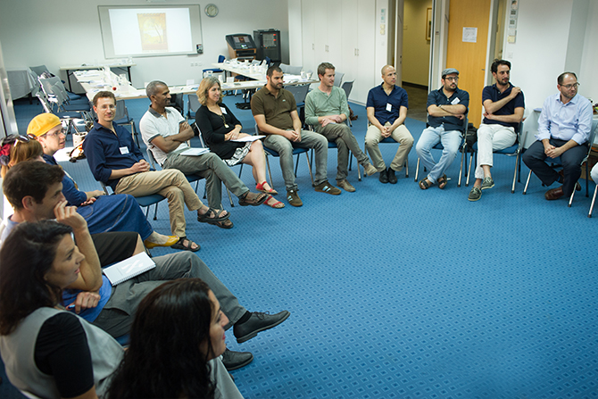

At the end of September, a celebratory launch day for the new Mandel Program for Leadership in Jewish Culture was held at the Mandel Leadership Institute.
“The program seeks to enrich the fabric of Jewish and Israeli culture and will enable Israelis to weave a richer tapestry together,” said Mishael Zion, the program director. “It will provide us with a space where we can talk about the visions and techniques appropriate for this task – a space where we can all be reinvigorated by your work in Jewish culture, and can explore the question of ‘What is Judaism?’ or ‘What is Jewish culture?’ without prescribed answers.
Participating in the program are 15 fellows – educators and cultural and social leaders from diverse backgrounds – who represent the multifaceted nature of Jewish culture and Israeli identity.
“We have been thinking about and planning this program for a number of years,” said Dr. Eli Gottlieb, director of the Mandel Leadership Institute. “On the one hand, there is an obvious and natural fit between the program and the Mandel Leadership Institute, given the Mandel Foundation’s extensive involvement in leadership development and in Jewish identity. On the other, it is a great challenge to bring together people with very different world views around such a controversial topic.”
The Mandel Program for Leadership in Jewish Culture is designed for leaders who are committed to helping Jewish culture in Israel to grow and flourish. It seeks to enrich their knowledge and professional capabilities in a learning environment that brings together people with different worldviews and diverse professional experience. Studies take place over the course of one academic year, and the curriculum combines core studies (clarification of personal and collective visions, Judaism and Israel studies, education, and leadership) with workshops and tutoring. The program’s faculty members are
Dr. Ruth Calderon and
David Guedj.

{kind=link}
{kind=link}